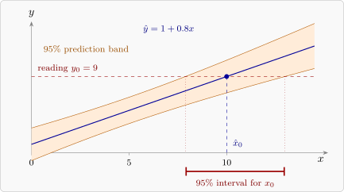

14.2 The calibration problem
In calibration the roles are reversed. A set of \(n\) standards with accurately known values \(x_1, \dots , x_n\) is measured by an instrument, giving readings \(y_1, \dots , y_n\), and the line \(\hat y = \hat \beta _0 + \hat \beta _1x\) is fitted. Then a sample with unknown value \(x_0\) gives a reading \(y_0\) (or the mean \(\bar y_0\) of \(m\) readings), and the task is to estimate \(x_0\). Typical examples: converting an absorbance into a concentration with a standard curve, or estimating age from a bone measurement. The classical estimator solves the fitted equation for \(x\): \[ \hat x_0 = \frac {y_0 - \hat \beta _0}{\hat \beta _1} . \] It is a ratio of random quantities, and has no finite mean in general, so its standard error is approximate. An exact confidence interval comes from inverting a prediction interval.
Theorem 14.2.1 (Calibration interval). Let \(y_0\) be the mean of \(m\) new readings at the unknown \(x_0\), independent of the calibration data, with the normal-theory assumptions. Then \[ T(x_0) = \frac {y_0 - \hat \beta _0 - \hat \beta _1x_0}{s\sqrt {\dfrac 1m + \dfrac 1n + \dfrac {(x_0 - \bar x)^2}{S_{xx}}}} \sim t_{n-2} , \] so the set of \(x_0\) with \(|T(x_0)| \le t_{\alpha /2,n-2}\) is a \(100(1 - \alpha )\%\) confidence set for \(x_0\). If \(g = t_{\alpha /2,n-2}^2s^2/(\hat \beta _1^2S_{xx}) < 1\), the set is the interval \[ \bar x + \frac {\hat x_0 - \bar x}{1 - g} \pm \frac {t_{\alpha /2,n-2}\,s}{|\hat \beta _1|(1 - g)}\sqrt {(1 - g)\Bigl (\frac 1m + \frac 1n\Bigr ) + \frac {(\hat x_0 - \bar x)^2}{S_{xx}}} . \]
Proof. At the true \(x_0\), the numerator \(y_0 - (\hat \beta _0 + \hat \beta _1x_0)\) is the difference between a new mean reading and the fitted line, which, as in Theorem 2.11.4, is normal with mean \(0\) and variance \(\sigma ^2(1/m + 1/n + (x_0 - \bar x)^2/S_{xx})\), and is independent of \(s^2\). So \(T(x_0) \sim t_{n-2}\), and \(P(|T(x_0)| \le t_{\alpha /2,n-2}) = 1 - \alpha \): the set of values \(x_0\) for which this holds contains the true value with probability \(1 - \alpha \).
To find the set, write \(u = x_0 - \bar x\), \(w = \hat x_0 - \bar x\) and \(c = 1/m + 1/n\), and note \(y_0 - \hat \beta _0 - \hat \beta _1x_0 = \hat \beta _1(\hat x_0 - x_0) = \hat \beta _1(w - u)\). Squaring the condition and dividing by \(\hat \beta _1^2\), with \(t = t_{\alpha /2,n-2}\), \[ (w - u)^2 \le \frac {t^2s^2}{\hat \beta _1^2}\Bigl (c + \frac {u^2}{S_{xx}}\Bigr ) = gS_{xx}c + gu^2 , \] that is, \((1 - g)u^2 - 2wu + w^2 - gS_{xx}c \le 0\). When \(g < 1\) this quadratic in \(u\) opens upwards, and the set is the interval between its roots, \[ u = \frac {w \pm \sqrt {w^2 - (1 - g)(w^2 - gS_{xx}c)}}{1 - g} = \frac {w \pm \sqrt {g}\sqrt {w^2 + (1 - g)S_{xx}c}}{1 - g} . \] Since \(\sqrt g = ts/(|\hat \beta _1|\sqrt {S_{xx}})\), the \(\pm \) term is \(\dfrac {ts}{|\hat \beta _1|}\sqrt {w^2/S_{xx} + (1 - g)c}\), and adding \(\bar x\) gives the interval. □
The quantity \(g\) has a simple meaning: \(g = t_{\alpha /2,n-2}^2/t_0^2\), where \(t_0 = \hat \beta _1/(s/\sqrt {S_{xx}})\) is the statistic for testing \(\beta _1 = 0\). So \(g < 1\) exactly when the slope is significantly different from zero. If it is not, the instrument cannot discriminate between values of \(x\), and the confidence set is the whole line or two half-lines. A good calibration has \(g\) very small, and then the interval is close to \[ \hat x_0 \pm t_{\alpha /2,n-2}\,\frac {s}{|\hat \beta _1|}\sqrt {\frac 1m + \frac 1n + \frac {(\hat x_0 - \bar x)^2}{S_{xx}}} , \] the interval from the delta method. The interval is narrowest when \(\hat x_0\) is near \(\bar x\), and replicating the reading (larger \(m\)) narrows it most when \(1/m\) is the dominant term. Figure 31 shows the construction: the interval is where the horizontal line at \(y_0\) meets the prediction band.
The inverse estimator
An alternative is to regress \(x\) on \(y\) directly and predict \(x_0\) from \(y_0\). This inverse estimator pulls estimates towards \(\bar x\). It can have smaller mean squared error when \(x_0\) is near the centre of the standards, but it is biased near the ends, and the classical estimator with the interval of Theorem 14.2.1 is the usual choice. When the calibration is precise, the two agree closely.

Example 14.2.2. To calibrate an instrument, six standard solutions of known concentration \(x\), in mg/l, were measured, giving the scaled absorbances \(y\):
| \(x\) | 0 | 2 | 4 | 6 | 8 | 10 |
| \(y\) | 0.6 | 2.9 | 5.3 | 7.8 | 10.0 | 12.6 |
A water sample gave the reading \(y_0 = 7.0\). Estimate its concentration with a \(95\%\) confidence interval, and repeat for the case in which \(7.0\) is the mean of three readings.
Solution. The calibration line. \(\bar x = 5\), \(S_{xx} = 70\), \(\bar y = 6.533\) and \(S_{xy} = 83.8\), so \[ \hat \beta _1 = \frac {83.8}{70} = 1.19714 , \qquad \hat \beta _0 = 6.533 - 1.19714(5) = 0.5476 . \] The residuals are \(0.052\), \(-0.042\), \(-0.036\), \(0.070\), \(-0.125\), \(0.081\), so \(SS_{\mathrm {Res}} = 0.03276\), \(s^2 = 0.00819\) and \(s = 0.0905\), on \(4\) degrees of freedom.
The estimate. \(\hat x_0 = (7.0 - 0.5476)/1.19714 = 5.390\) mg/l.
The interval. With \(t_{0.025,4} = 2.776\), \[ g = \frac {2.776^2(0.00819)}{1.19714^2(70)} = 0.00063 , \] tiny, as it should be for a good calibration. With \(m = 1\), \[ \frac {t\,s}{\hat \beta _1}\sqrt {1 + \frac 16 + \frac {0.390^2}{70}} = \frac {2.776(0.0905)}{1.19714}(1.0812) = 0.227 , \] and the interval is \(5.390 \pm 0.227\), from \(5.163\) to \(5.617\) mg/l. The exact interval of Theorem 14.2.1 agrees with this to three decimals, since \(g\) is so small. With the mean of three readings, \(1/m = \frac 13\) replaces \(1\) and the half-width falls to \(0.149\): the interval is \((5.241, 5.539)\). Most of the uncertainty comes from the new reading, not from the calibration line, so replicating the reading is the effective way to improve precision. The inverse estimator, from regressing \(x\) on \(y\), gives \(5.390\) as well.
Questions on this section
Stuck on something here? Ask below and it stays attached to this topic.